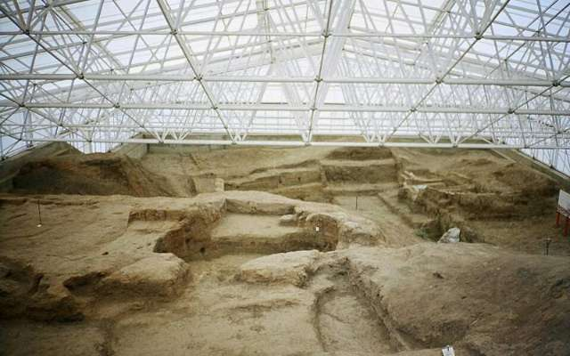

9600–8000 ق.م · العصر الحجري الحديث ما قبل الفخار
غوبكلي تبه والتلال الحجرية
التلال الحجرية (تاش تبه لر) حول شانلي أورفا مجموعة من مستوطنات العصر الحجري الحديث تدعونا إلى إعادة التفكير في كيفية استقرار الإنسان.

8300–5700 ق.م · العصر الحجري الحديث
أولى قرى الأناضول: آشيقلي هويوك وتشاتال هويوك
يقدّم وسط الأناضول بعضًا من أشهر الأمثلة في العالم على الانتقال من الصيد وجمع الثمار إلى الزراعة.

1650–700 ق.م · العصر البرونزي والحديدي
الحثيون والممالك الحثية المتأخرة
امتدت المملكة الحثية من وسط الأناضول إلى سوريا، وكانت إحدى القوى الكبرى في الشرق الأدنى القديم.

القرن 9–6 ق.م · العصر الحديدي
الأورارتيون
امتدت مملكة أورارتو من بحيرة وان عبر شرق الأناضول، واشتهرت بقلاعها وهندستها المائية وأعمالها البرونزية.